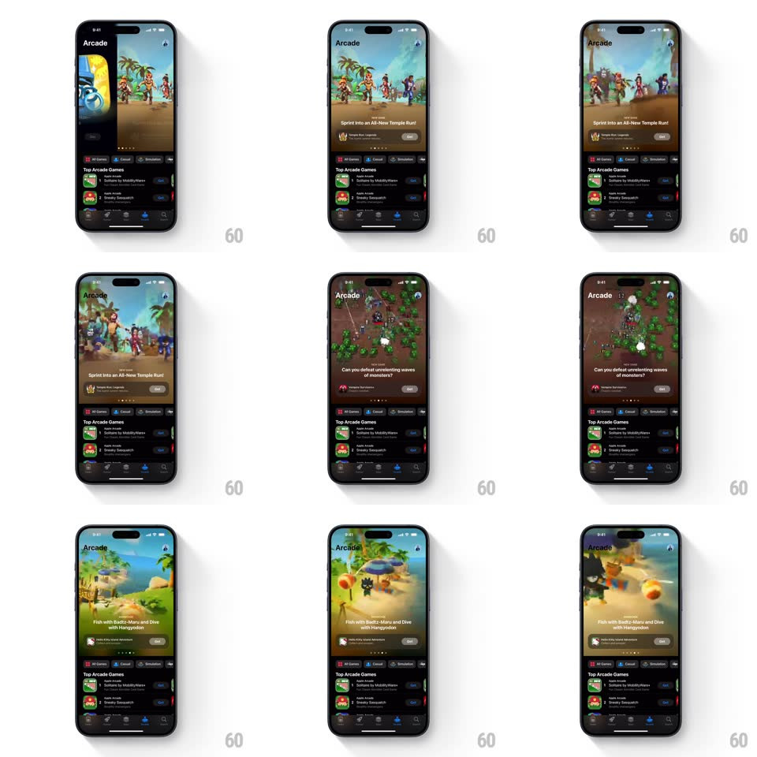

Media
Frame-by-frame

Rebuild this interaction 1:1: the App Store Arcade tab's hero carousel - full-width game preview cards (Temple Run, Hello Kitty Island Adventure style) auto-advancing with smooth horizontal slides, page dots below, above a "Top Arcade Games" list.

Rebuild this interaction 1:1: the App Store Arcade tab's hero carousel - full-width game preview cards (Temple Run, Hello Kitty Island Adventure style) auto-advancing with smooth horizontal slides, page dots below, above a "Top Arcade Games" list.
## Integration
Integration: stack-agnostic spec - springs given as stiffness/damping, timed motions as duration + curve; map every value to your framework and animation library of choice.
## Scene
Dark store page, "Arcade" title. Hero: a near-full-width rounded card playing a silent game preview (video), title + tagline overlaid bottom-left ("Sprint Into an All-New Temple Run!"), a GET button bottom-right, page dots beneath. Below: "Top Arcade Games" rows with icons and GET buttons; tab bar at bottom.
## Motion spec
Pattern: auto-playing video hero carousel.
- Auto-advance every ~5s: the current card slides left and off (450ms, ease-in-out) while the next slides in from the right, a 12px parallax gap between them; the active page dot stretches into a pill (width spring ~380/20).
- The incoming card's video crossfades from its poster frame (300ms) as playback begins - motion starts only when the card is settled.
- Manual swipe: cards track 1:1 with a hint of the neighbor at the edges; release snaps (spring ~320/22); swiping resets the auto-advance timer.
- The list below is unaffected - the carousel is a window, the page a document.
- Scrolling the page: the hero card keeps playing until ~60% off-screen, then pauses (video fades to poster, 250ms).
## Calibration
- Videos are muted and looping - previews, not trailers.
- The GET button is on every card - install without leaving the carousel.
## Reduced motion
Cards crossfade on poster frames; no autoplay motion.
## Don't miss
- The parallax gap during slides - cards aren't glued edge to edge.
- Video starts AFTER the slide lands - motion never fights motion.